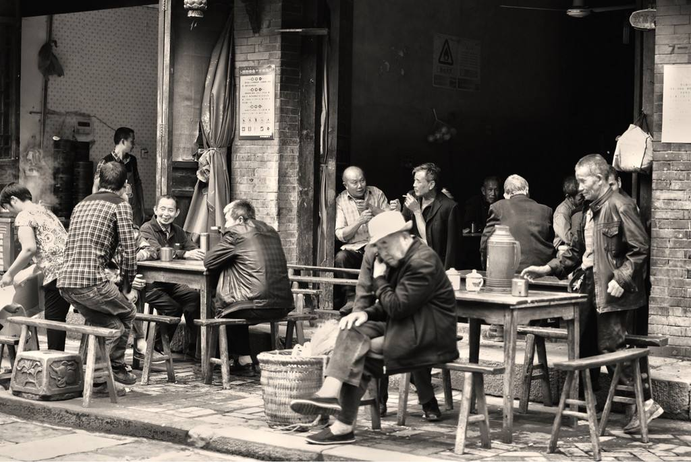
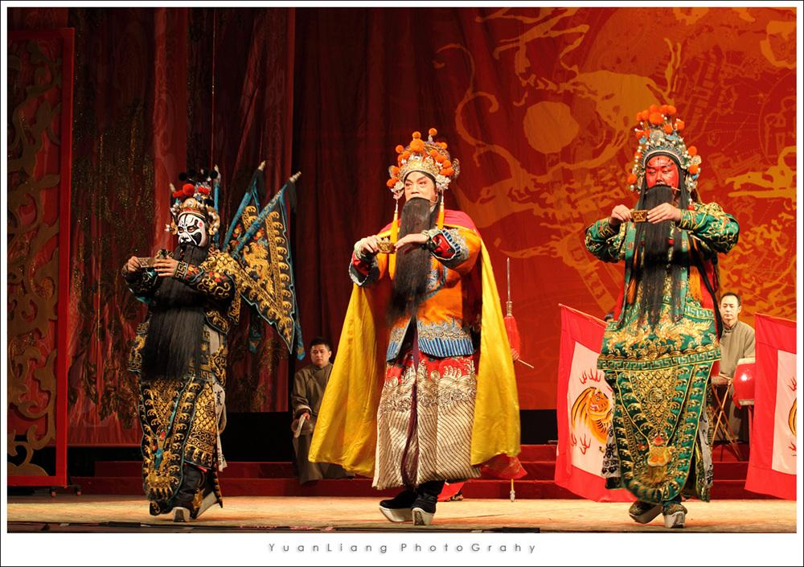
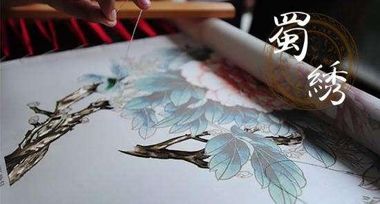
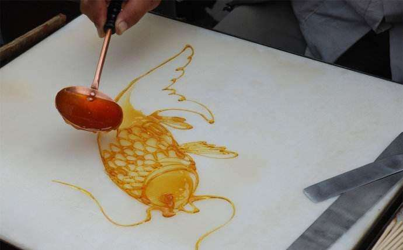

-
茶馆文化 By Baidu,Link
成都人喝茶讲究舒适、有味。四川产竹，椅子都是代表四川茶馆特色的竹靠椅，让茶客想躺就躺想坐就坐，讲个舒服。茶馆内卖报的、擦鞋的、修脚的、按摩的、掏耳朵的、卖瓜子豆腐脑的，穿梭往来，服务性的项目花样之多，也算成都茶馆一景。进得茶馆往竹椅上一靠，伙计便大声打着招呼，冲上茶来。冲茶这功夫是成都茶馆一绝，如同杂技表演。正宗的川茶馆应是紫铜长嘴大茶壶、锡茶托、景瓷盖碗，成都人喜欢喝茉莉花茶。伙计托一大堆茶碗来到桌前，抬手间，茶托已滑到每个茶客面前，盖碗咔咔端坐到茶托上，随后一手提壶，一手翻盖，一条白线点入茶碗，迅即盖好盖，速度惊人却纹丝不乱，表现出一种优美韵律和高超技艺。 人民公园茶馆一角 人民公园茶馆一角 如今全国的群众都知道成都是一个闲散的城市，生活节奏慢半拍，打麻将、泡茶馆蔚然成风。对这样的评价我这个四川人自我安慰认为是褒贬皆有。贬义就不说它了，褒义我认为是说我们日子过的悠闲、安逸、滋润，会享受小康。
-
川剧 By Baidu,Link
川剧，是中国传统戏曲剧种之一，流行于四川东中部、重庆及贵州、云南部分地区。川剧脸谱，是川剧表演艺术中重要的组成部分，是历代川剧艺人共同创造并传承下来的艺术瑰宝。川剧由昆腔、高腔、胡琴、弹戏、灯调五种声腔组成。川剧分小生，须生，旦，花脸，丑角5个行当，各行当均有自成体系的功法程序，尤以“三小”，即小丑，小生，小旦的表演最具特色，在戏剧表现手法、表演技法方面多有卓越创造，能充分体现中国戏曲虚实相生、遗形写意的美学特色。 [2] 2006年5月20日，川剧经国务院批准列入第一批国家级非物质文化遗产名录。
-
蜀绣 By Baidu,Link
蜀绣又名“川绣”，与苏绣、湘绣、粤绣齐名，为中国四大名绣之一，是在丝绸或其他织物上采用蚕丝线绣出花纹图案的中国传统工艺。作为中国刺绣传承时间最长的绣种之一，蜀绣以其明丽清秀的色彩和精湛细腻的针法形成了自身的独特韵味，丰富程度居四大名绣之首。 [4] 蜀绣历史悠久，最早可上溯到三星堆文明，东晋以来与蜀锦并称“蜀中瑰宝”。蜀绣以软缎、彩丝为主要原料，针法包括12大类122种。具有针法严谨、针脚平齐、变化丰富、形象生动、富有立体感等特点。
-
糖画 By Baidu,Link
糖画是一种传统民间手工艺，以糖为材料来进行造型的。所用的工具仅一勺一铲，糖料一般是红、白糖加上少许饴糖放在炉子上用温火熬制，熬到可以牵丝时即可以用来浇铸造型了。 在绘制造型时，由艺人用小汤勺舀起溶化了的糖汁，在石板上飞快地来回浇铸，画出造型，民间艺人的手上功夫便是造型的关键。当造型完成后，随即用小铲刀将糖画铲起，粘上竹签。